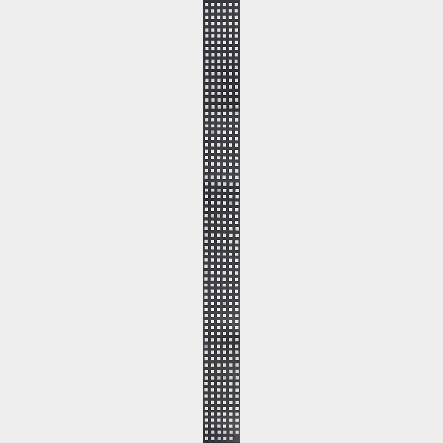
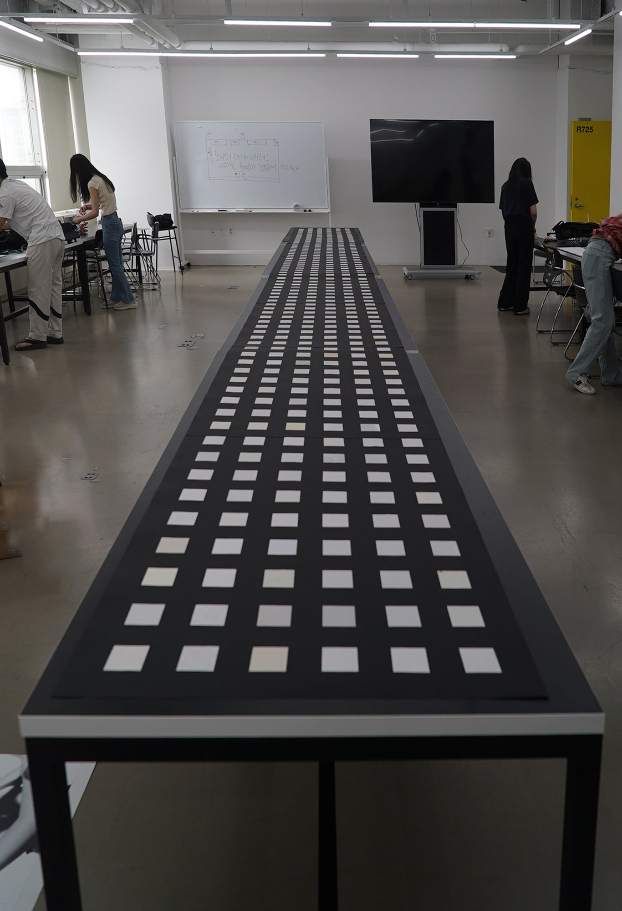
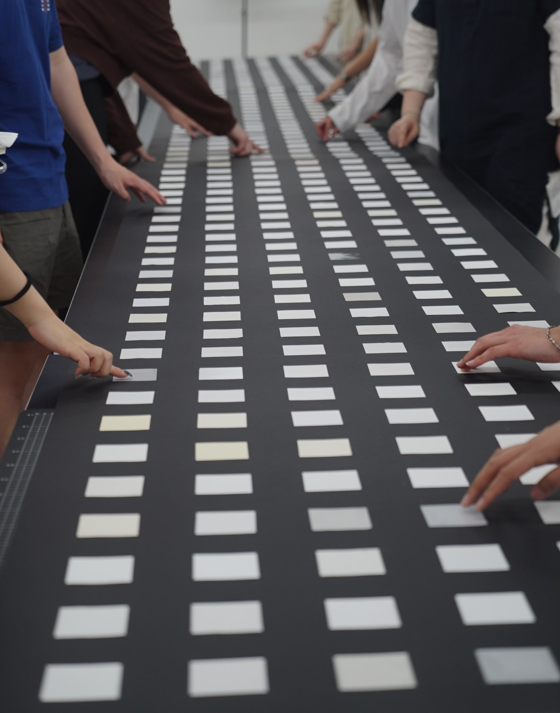
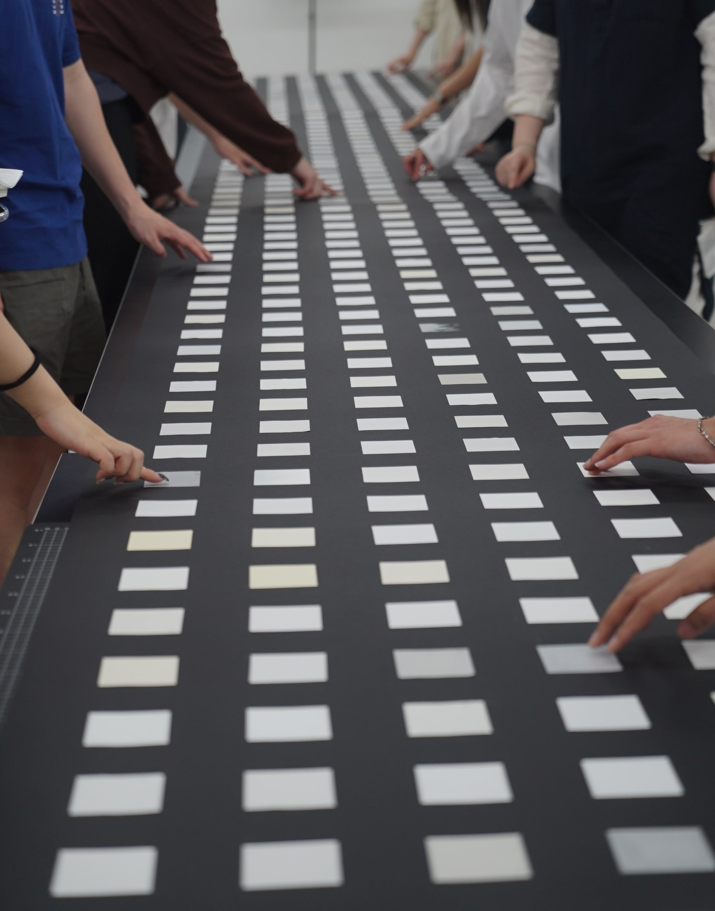
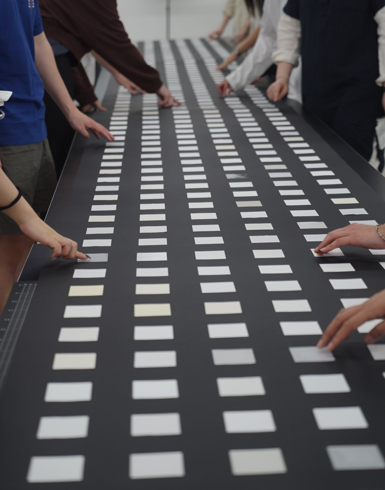

온갖 흰 종이

국내 유통 중인 419장의 종이를 엉뚱한 방식으로 정렬해 조망했습니다. 국내 제지회사 6곳(두성, 삼원, 서경, 한솔, 무림, 한국)에서 수집한 흰 종이 419장을 거듭 분류했습니다. 처음에는 제지 회사가 규정한 흰 종이와 그 외로 나누었는데요. 이때 '그 외'에 해당하면서 '흰 종이'보다 더 흰 종이가 존재했고, 이름만으로 분류하는 것은 무의미함을 깨달았습니다. 이름표를 떼어내고 이름, 두께, 질감, 색상에 따라, 흰색에 가까운 것부터 먼 것까지 스펙트럼으로 분류했습니다. 그런데 이러면 어떤 종이는 분류하기 애매해지거나 삭제되어야 했습니다. 그 종이들도 어쨌든 흰 종이였기에 마침내 ‘어차피 완벽한 흰 종이는 존재하지 않는다.’라는 결론에 도달했습니다. 완벽한 흰 종이 같은 건 없으니 이 종이, 저 종이 모두 흰 종이라는 것입니다. 자의적 분류의 무의미함을 표현하고자, 엉뚱하게도 수집한 흰 종이들을 ‘가나다 순’으로 정렬해 검은 종이에 붙였습니다. 흰 종이에는 서로 우열이나 위계가 없으며 그 자체로의 속성을 담은 채, 다양하게 존재하기 때문입니다.



 



